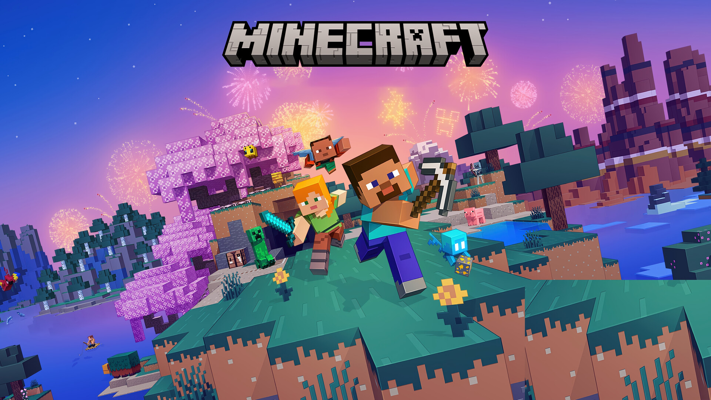

Sandbox y Supervivencia
Minecraft
Crea todo lo que puedas imaginar, descubre misterios espeluznantes y sobrevive a la noche en el juego de aventura tipo sandbox definitivo. En Minecraft, cada partida es diferente y te esperan aventuras inolvidables a la vuelta de la esquina. Explora y crea tu camino a un mundo infinito al que le puedes dar forma bloque a bloque